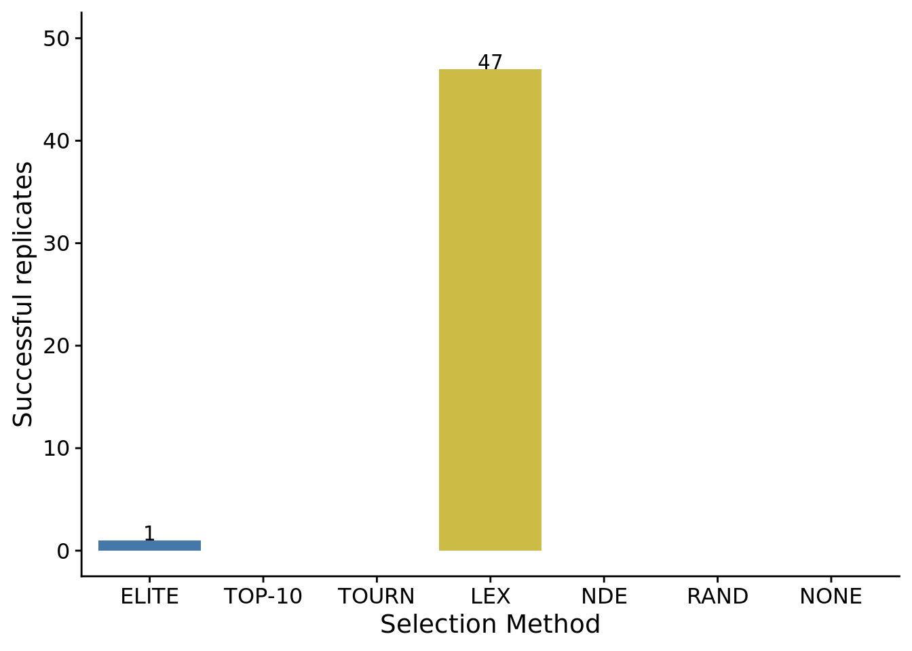
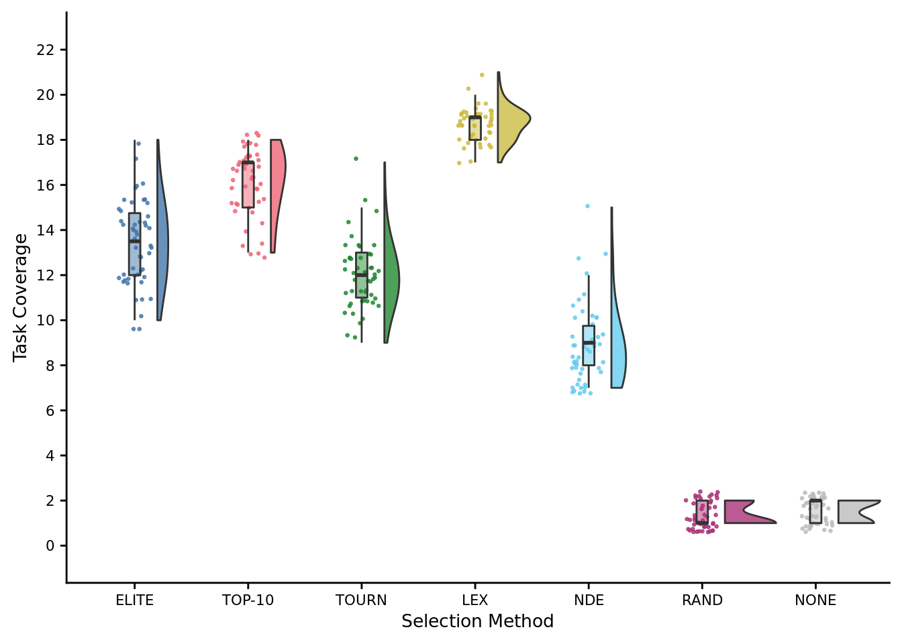
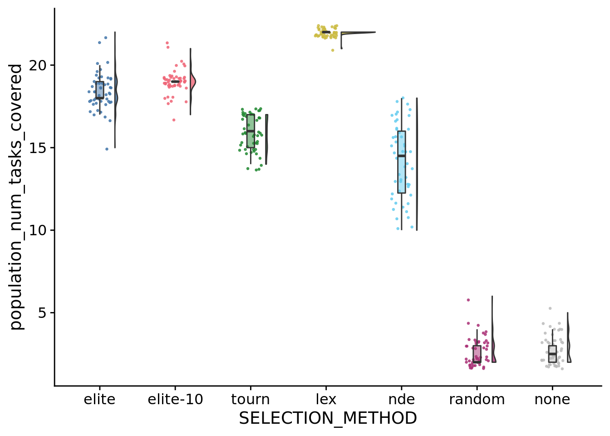
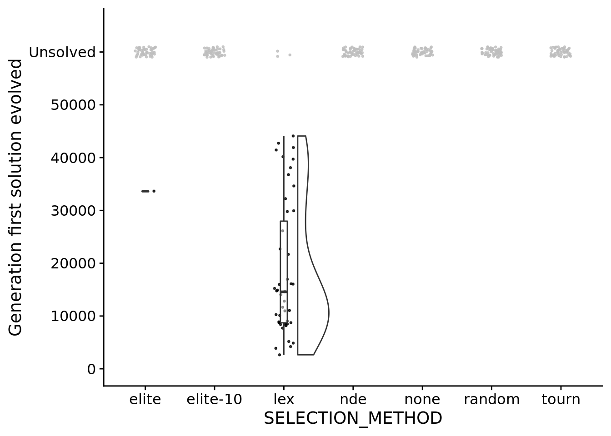

Chapter 6 Conventional genetic programming experiment
Data analyses for our conventional evolutionary computing experiment.
6.2 Analysis dependencies
Load all required R libraries
## -- Attaching packages --------------------------------------- tidyverse 1.3.1 --## v ggplot2 3.3.5 v purrr 0.3.4
## v tibble 3.1.6 v dplyr 1.0.8
## v tidyr 1.2.0 v stringr 1.4.0
## v readr 2.1.2 v forcats 0.5.1## -- Conflicts ------------------------------------------ tidyverse_conflicts() --
## x dplyr::filter() masks stats::filter()
## x dplyr::lag() masks stats::lag()library(ggplot2)
library(cowplot)
library(RColorBrewer)
source("https://gist.githubusercontent.com/benmarwick/2a1bb0133ff568cbe28d/raw/fb53bd97121f7f9ce947837ef1a4c65a73bffb3f/geom_flat_violin.R")These analyses were knit with the following environment:
## _
## platform x86_64-pc-linux-gnu
## arch x86_64
## os linux-gnu
## system x86_64, linux-gnu
## status
## major 4
## minor 1.3
## year 2022
## month 03
## day 10
## svn rev 81868
## language R
## version.string R version 4.1.3 (2022-03-10)
## nickname One Push-Up6.3 Setup
Load experiment summary data.
exp_summary_data_loc <- paste0(working_directory,"data/experiment_summary.csv")
exp_summary_data <- read.csv(exp_summary_data_loc, na.strings="NONE")
exp_summary_data$SELECTION_METHOD <- factor(
exp_summary_data$SELECTION_METHOD,
levels=c(
"elite",
"elite-10",
"tournament",
"lexicase",
"non-dominated-elite",
"non-dominated-tournament",
"random",
"none"
),
labels=c(
"elite",
"elite-10",
"tourn",
"lex",
"nde",
"ndt",
"random",
"none"
)
)Load time series data.
time_series_data_loc <- paste0(working_directory,"data/pop_snapshot_time_series.csv")
time_series_data <- read.csv(time_series_data_loc, na.strings="NONE")
get_sel <- function(seed) {
return(filter(exp_summary_data, SEED==seed)$SELECTION_METHOD)
}
solution_evolved_fun <- function(seed, update) {
d <- filter(exp_summary_data, SEED==seed)
return(update==d$update && d$max_fit_is_solution=="1");
}
time_series_data$SELECTION_METHOD <- mapply(
get_sel,
time_series_data$SEED
)
time_series_data$solution_evolved <- mapply(
solution_evolved_fun,
time_series_data$SEED,
time_series_data$update
)
time_series_data$SELECTION_METHOD <- as.factor(
time_series_data$SELECTION_METHOD
)
exp_data_gen_2000 <- filter(time_series_data, update==2000)Miscellaneous setup.
# Configure our default graphing theme
theme_set(theme_cowplot())
# Palette
cb_palette <- "Set2"
# Create a directory to store plots
plot_directory <- paste0(working_directory, "plots/")
dir.create(plot_directory, showWarnings=FALSE)
# Order selection schemes.
selection_method_breaks <- c("elite", "elite-10", "tourn", "lex", "nde", "random", "none")
selection_method_labels <- c("ELITE", "TOP-10", "TOURN", "LEX", "NDE", "RAND", "NONE")6.4 Number of successful replicates
We considered a run to be successful if it produced a program capable of performing all 22 tasks during evaluation.
ggplot(
filter(exp_summary_data, max_fit_is_solution=="1"),
aes(x=SELECTION_METHOD, fill=SELECTION_METHOD)
) +
geom_bar() +
geom_text(
stat="count",
mapping=aes(label=..count..),
position=position_dodge(0.9),
vjust=0
) +
scale_y_continuous(
limits=c(0, 50),
breaks=seq(0,50,10)
) +
scale_x_discrete(
name="Selection Method",
limits=selection_method_breaks,
breaks=selection_method_breaks,
labels=selection_method_labels
) +
scale_fill_brewer(
palette=cb_palette
) +
scale_color_brewer(
palette=cb_palette
) +
ylab("Successful replicates") +
theme(legend.position = "none")
## Saving 7 x 5 in image6.5 Final task coverage
Task coverage after 55,000 generations of evolution.
max_task_cov_fig <-
ggplot(
exp_summary_data,
aes(
x=SELECTION_METHOD,
y=max_fit_aggregate_score,
fill=SELECTION_METHOD
)
) +
geom_flat_violin(
position = position_nudge(x = .2, y = 0),
alpha = .8,
adjust=1.5
) +
geom_point(
mapping=aes(color=SELECTION_METHOD),
position = position_jitter(width = .15),
size = .5,
alpha = 0.8
) +
geom_boxplot(
width = .1,
outlier.shape = NA,
alpha = 0.5
) +
scale_y_continuous(
name="Task Coverage",
limits=c(-0.5,22.5),
breaks=seq(0,22,2)
) +
scale_x_discrete(
name="Selection Method",
breaks=selection_method_breaks,
labels=selection_method_labels
) +
scale_fill_brewer(
palette=cb_palette
) +
scale_color_brewer(
palette=cb_palette
) +
theme(
legend.position="none",
axis.text = element_text(size = 8),
axis.title = element_text(size=10)
)
max_task_cov_fig
ggsave(
plot=max_task_cov_fig,
filename=paste0(plot_directory, "2021-11-15-ec-performance.pdf"),
height=3,
width=4
)
# save_plot(
# filename=paste0(plot_directory, "2021-11-15-ec-performance-2.pdf"),
# plot=max_task_cov_fig,
# base_height=6,
# base_asp=2.5
# )Statistical results:
##
## Kruskal-Wallis rank sum test
##
## data: max_fit_aggregate_score by SELECTION_METHOD
## Kruskal-Wallis chi-squared = 332.52, df = 6, p-value < 2.2e-16# Kruskal-wallis is significant, so we do a post-hoc wilcoxon rank-sum.
pairwise.wilcox.test(
x=exp_summary_data$max_fit_aggregate_score,
g=exp_summary_data$SELECTION_METHOD,
p.adjust.method="bonferroni",
)##
## Pairwise comparisons using Wilcoxon rank sum test with continuity correction
##
## data: exp_summary_data$max_fit_aggregate_score and exp_summary_data$SELECTION_METHOD
##
## elite elite-10 tourn lex nde random
## elite-10 0.0087 - - - - -
## tourn 1.8e-14 < 2e-16 - - - -
## lex < 2e-16 < 2e-16 < 2e-16 - - -
## nde < 2e-16 < 2e-16 1.7e-15 < 2e-16 - -
## random < 2e-16 < 2e-16 < 2e-16 < 2e-16 < 2e-16 -
## none < 2e-16 < 2e-16 < 2e-16 < 2e-16 < 2e-16 0.8360
##
## P value adjustment method: bonferroni6.6 Generation 2,000 task coverage
Task coverage after 2,000 generations (i.e., the number of cycles runin the directed evolution experiments)
ggplot(
exp_data_gen_2000,
aes(
x=SELECTION_METHOD,
y=max_org_task_coverage,
fill=SELECTION_METHOD
)
) +
geom_flat_violin(
position = position_nudge(x = .2, y = 0),
alpha = .8,
adjust=1.5
) +
geom_point(
mapping=aes(color=SELECTION_METHOD),
position = position_jitter(width = .15),
size = .5,
alpha = 0.8
) +
geom_boxplot(
width = .1,
outlier.shape = NA,
alpha = 0.5
) +
scale_y_continuous(
name="Task Coverage",
limits=c(-0.5,22.5),
breaks=seq(0,22,2)
) +
scale_x_discrete(
name="Selection Method",
breaks=selection_method_breaks,
labels=selection_method_labels
) +
scale_fill_brewer(
palette=cb_palette
) +
scale_color_brewer(
palette=cb_palette
) +
theme(
legend.position="none",
axis.text = element_text(size = 8),
axis.title = element_text(size=10)
)
Statistical results:
##
## Kruskal-Wallis rank sum test
##
## data: max_org_task_coverage by SELECTION_METHOD
## Kruskal-Wallis chi-squared = 322.54, df = 6, p-value < 2.2e-16# Kruskal-wallis is significant, so we do a post-hoc wilcoxon rank-sum.
pairwise.wilcox.test(
x=exp_data_gen_2000$max_org_task_coverage,
g=exp_data_gen_2000$SELECTION_METHOD,
p.adjust.method="bonferroni",
)##
## Pairwise comparisons using Wilcoxon rank sum test with continuity correction
##
## data: exp_data_gen_2000$max_org_task_coverage and exp_data_gen_2000$SELECTION_METHOD
##
## elite elite-10 tourn lex nde random
## elite-10 1.4e-09 - - - - -
## tourn 0.0013 1.9e-14 - - - -
## lex < 2e-16 7.3e-15 < 2e-16 - - -
## nde 9.8e-14 2.3e-16 2.7e-11 < 2e-16 - -
## random < 2e-16 < 2e-16 < 2e-16 < 2e-16 < 2e-16 -
## none < 2e-16 < 2e-16 < 2e-16 < 2e-16 < 2e-16 1.0000
##
## P value adjustment method: bonferroni6.7 Population-level task coverage
Task coverage across entire population after 55,000 generations of evolution.
ggplot(
exp_summary_data,
aes(
x=SELECTION_METHOD,
y=population_num_tasks_covered,
fill=SELECTION_METHOD
)
) +
geom_flat_violin(
position = position_nudge(x = .2, y = 0),
alpha = .8
) +
geom_point(
mapping=aes(color=SELECTION_METHOD),
position = position_jitter(width = .15),
size = .5,
alpha = 0.8
) +
geom_boxplot(
width = .1,
outlier.shape = NA,
alpha = 0.5
) +
scale_fill_brewer(
palette="Set2"
) +
scale_color_brewer(
palette="Set2"
) +
theme(
legend.position="none"
)
## Saving 7 x 5 in image6.8 Generations elapsed before a solution evolves
Runs where no solution evolved are in gray and plotted as “unsolved”.
unfinished_data <- filter(exp_summary_data, max_fit_is_solution=="0")
unfinished_data$graph_update <- 60000
ggplot(
filter(exp_summary_data, max_fit_is_solution=="1"),
aes(
x=SELECTION_METHOD,
y=update
)
) +
geom_flat_violin(
position = position_nudge(x = .2, y = 0),
alpha = .8
) +
geom_point(
position = position_jitter(width = .15),
size = .5,
alpha = 0.8
) +
geom_point(
data = unfinished_data,
mapping=aes(
x=SELECTION_METHOD,
y=graph_update
),
color="gray",
position = position_jitter(width = .15, height=1000),
size = .5,
alpha = 0.8
) +
geom_boxplot(
width = .1,
outlier.shape = NA,
alpha = 0.5
) +
# scale_fill_brewer(
# palette="Set2",
# breaks=selection_method_breaks,
# labels=selection_method_labels
# ) +
# scale_color_brewer(
# palette="Set2",
# breaks=selection_method_breaks,
# labels=selection_method_labels
# ) +
scale_y_continuous(
name="Generation first solution evolved",
limits=c(0, 65000),
breaks=c(0, 10000, 20000, 30000, 40000, 50000, 60000),
labels=c("0", "10000", "20000", "30000", "40000", "50000", "Unsolved")
) +
theme(
legend.position="none"
)## Warning: Groups with fewer than two data points have been dropped.
## Saving 7 x 5 in image## Warning: Groups with fewer than two data points have been dropped.